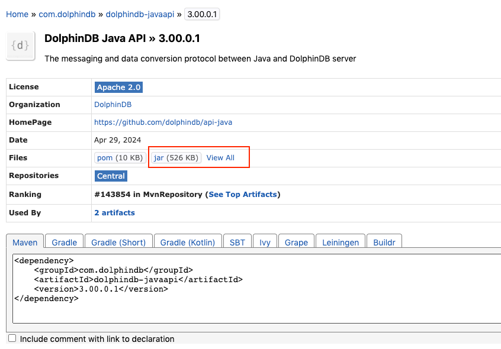

安装
环境准备
在安装 DolphinDB Java API 前，请确保已部署 Java1.8 及以上版本的运行环境。若无，推荐前往 Java SE 8 Archive Downloads 下载安装。
安装方法
Maven 项目
DolphinDB Java API 主要通过 Maven 进行管理与安装。用户可以使用 Maven 坐标来安装Java API。
以 3.00.0.2 版本的 DolphinDB Java API 为例，在您的 maven 项目的 pom 文件中填写如下 Maven 坐标，然后执行 reload 即可。
<!-- https://mvnrepository.com/artifact/com.dolphindb/dolphindb-javaapi -->
<dependency>
<groupId>com.dolphindb</groupId>
<artifactId>dolphindb-javaapi</artifactId>
<version>3.00.0.2</version>
</dependency>您可以根据开发需求将 3.00.0.2 修改为指定版本。推荐使用最新版本的 DolphinDB Java API。最新版本可在 dolphindb-javaapi 查询到。
非 Maven 项目
若您的项目非 Maven 项目，您可以在 Maven 仓库中下载对应版本的 DolphinDB Java API jar 包。
以下载 3.00.0.1 版本的 Java API jar 包为例，点击下图红框所示位置即可下载相应 jar 包。

下载完成后，安装步骤如下：
- 在项目中创建一个文件夹（通常称为"lib"或"libs"）用于存放外部 Jar 包；若 lib/libs 已存在，无需重复创建。
- 将下载好的 Jar 包复制或移动到刚刚创建的文件夹中。
- 在 IntelliJ IDEA、Eclipse 等集成开发环境中，右键点击项目，然后选择"Build Path"或"Add to Build Path"，再选择"Configure Build Path"。
- 在打开的对话框中，切换到"Libraries"或"Dependencies"选项卡，点击"Add JARs"或"Add External JARs"按钮。
- 在文件选择对话框中，浏览到刚刚存放 Jar 包的文件夹，选择要导入的 Jar 包，然后点击"Open"或"OK"按钮。
- 确保选择的 Jar 包出现在项目的构建路径中，然后点击"Apply"或"OK"保存更改。
现在您可以在项目中使用导入的 Jar 包中的类和功能了。
验证安装
安装完成后，您可以尝试运行以下测试方法，如果能够正常运行并获得对应的输出，即视为安装成功。
@Test public void testInstallJavaApi() { BasicString basicString = new BasicString("hello world!"); System.out.println(basicString.getString()); }
输出：
hello world!
注，自 3.00.0.0 版本起，提供 Utils.getJavaApiVersion() 方法，可获取当前 API 的版本号。